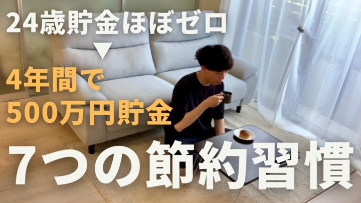
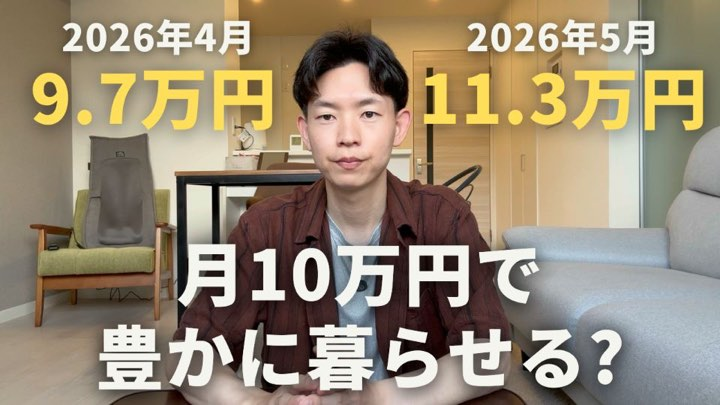
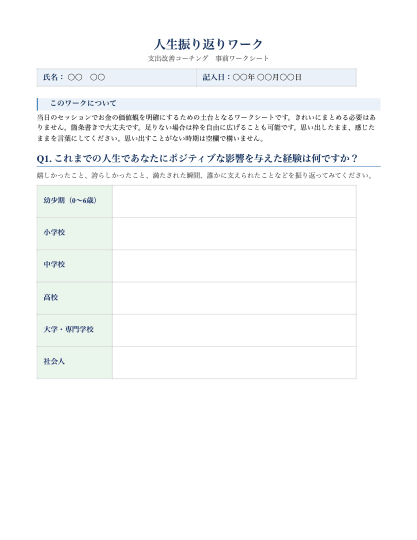
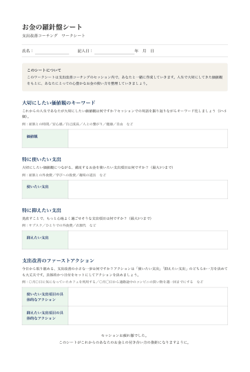

{{p.text}}
{{p.sub}}
支出改善コーチングは、周囲に流されず今を大切にしながら
お金の使い方・貯め方の"自分軸を整える"セッションです。
ユヤ丨舘 優弥（たち ゆうや）
YouTubeチャンネル「ユヤの節約ルーティン」で、自身の「心豊かな節約・人生」を発信しながら、精神保健福祉士・プロコーチとして300名以上の対人支援をしてきました。
その経験から生まれたのが、この支出改善コーチングです。


{{a.title}}
{{a.desc}}
{{c.text}}
多くの方に共感を得た心豊かな節約・人生は、
価値観を明確にした支出改善がスタートでした。
「心豊かな人生を生きるために、お金の使い方」を一緒に考えるセッションです。
あなただけの判断基準＝「お金の羅針盤」をつくり、日々の支出を「がまん」から「自分らしい選択」にしていきます。
コーチングとは？
対話を通じて、コーチングを受ける方（クライアント）の中にある答え・考え・想いを引き出していくプロセスです。
コーチはアドバイスをする人ではなく、問いやフィードバックをしながら、自分ひとりでは気づきにくい無意識下にある価値観や思考パターンを一緒に言語化していきます。
{{v.n}}
{{v.text}}
{{v.sub}}
もうブレない・惑わない。
あなただけの心豊かなお金の使い方・貯め方を明確に。
「心理的安全性」と「受容」
ここは単にお金の話をする場ではなく、あなたの大切な人生と想いに向き合う時間です。
だからこそ「安心して話せる場」を何より大事にしています。
これまでの対人支援の経験を活かし、どんなお話も否定せず、最後まで受け止め、あなたの中にある可能性を引き出します。
{{s.title}}
{{s.desc}}


{{s.sheetTag}}
{{s.sheetTitle}}
{{ln.label}}
{{ln.text}}
{{pk.text}}
{{pk.sub}}
セッション後が本当のスタート。
これら3つが日々の支出改善を支え続けます。
{{t.name}}
{{t.placeholder}}
支出改善コーチングは、FP家計相談とは少し違います。
|
FP家計相談 |
支出改善コーチング |
|
| {{row.label}} |
{{row.fp}} {{row.fpSub}} |
{{row.coaching}} {{row.coachingSub}} |
支出改善の本質は、やり方ではなく自分のあり方。
そんな深い気づきを提供します。
一回のセッションで、
一生使える支出改善の羅針盤を手に入れます。
まずは無料個別相談で支出の悩みや課題の整理から。
無料個別相談を予約する・全国どこからでもオンラインで参加できます
・まずは30分、気軽にお話しください
{{f.q}}
{{f.a}}